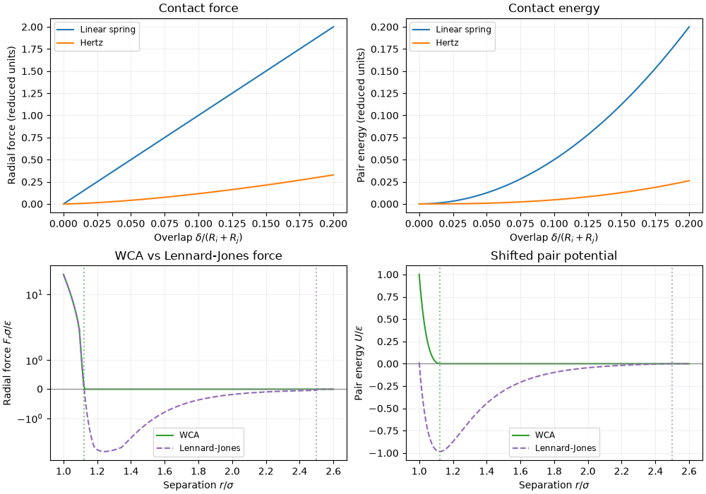

Note
Go to the end to download the full example code.
Force Models#
A ForceModel defines the pairwise interaction law
evaluated by the collider for every interacting pair. This guide covers:
Built-in pairwise force laws and their constitutive response curves.
Combining laws with
LawCombiner.Species-wise routing with
ForceRouter.Stateful contact history (e.g. Cundall–Strack friction).
Built-in Force Models#
Select a law via force_model_type in create()
(see Materials, Matchmakers, and Material Tables for configuring mat_table):
|
Class |
Material properties |
History? |
Notes |
|---|---|---|---|---|
|
|
No |
Linear overlap repulsion \(F = k\delta\) (default). |
|
|
|
No |
Linear spring + normal dashpot from restitution |
|
|
|
No |
Nonlinear Hertzian contact \(F \propto \delta^{3/2}\). |
|
|
|
No |
Purely repulsive LJ cut at \(2^{1/6}\sigma\). |
|
|
|
No |
Force-shifted WCA turning on smoothly at contact \(r=\sigma\). |
|
|
|
No |
Energy-shifted 12–6 LJ with attraction out to |
|
|
|
Yes |
Normal spring-dashpot + tangential Coulomb friction & rolling resistance. |
|
|
|
No |
Sphere–facet and facet–facet contact laws (Facets (Triangular & Line Boundaries)). |
from dataclasses import dataclass
import jax
import jax.numpy as jnp
import matplotlib.pyplot as plt
import jaxdem as jdem
Comparing Pairwise Constitutive Curves#
Sample force() and
energy() directly for one pair. Positive
radial force is repulsive; negative is attractive. Notice that WCA acts out
to \(2^{1/6}\sigma\), whereas Lennard-Jones attracts out to its default
cutoff \(2.5\sigma\) (with \(\sigma = R_i + R_j\)):
response_state = jdem.State.create(
pos=jnp.array([[0.0, 0.0], [1.0, 0.0]]),
rad=jnp.full(2, 0.5),
)
elastic_table = jdem.MaterialTable.from_materials(
[jdem.Material.create("elastic", young=10.0, poisson=0.3, density=1.0)]
)
lj_table = jdem.MaterialTable.from_materials(
[jdem.Material.create("lj", density=1.0, epsilon=1.0)]
)
def pair_response(distance: jax.Array, system: jdem.System):
positions = response_state.pos.at[1, 0].set(distance)
history = jnp.empty((0,))
force, _, _ = system.force_model.force(
1, 0, positions, response_state, system, history, advance_history=False
)
energy = system.force_model.energy(1, 0, positions, response_state, system, history)
return force[0], energy
sample_response = jax.jit(jax.vmap(pair_response, in_axes=(0, None)))
fig, axes = plt.subplots(2, 2, figsize=(10, 7), layout="constrained")
overlaps = jnp.linspace(0.0, 0.2, 120)
distances = jnp.linspace(1.0, 2.6, 240)
for law, label, color in (
("spring", "Linear spring", "tab:blue"),
("hertz", "Hertz", "tab:orange"),
("wca", "WCA", "tab:green"),
("lennard_jones", "Lennard-Jones", "tab:purple"),
):
contact_law = law in ("spring", "hertz")
response_system = jdem.System.create(
state=response_state,
force_model_type=law,
mat_table=elastic_table if contact_law else lj_table,
collider_type="naive",
rotation_integrator_type=None,
)
sample_distances = 1.0 - overlaps if contact_law else distances
radial_force, pair_energies = sample_response(sample_distances, response_system)
row = 0 if contact_law else 1
abscissa = overlaps if contact_law else distances
linestyle = "--" if law == "lennard_jones" else "-"
axes[row, 0].plot(
abscissa, radial_force, color=color, linestyle=linestyle, label=label
)
axes[row, 1].plot(
abscissa, pair_energies, color=color, linestyle=linestyle, label=label
)
axes[0, 0].set(title="Contact force", ylabel="Radial force (reduced units)")
axes[0, 1].set(title="Contact energy", ylabel="Pair energy (reduced units)")
for ax in axes[0]:
ax.set_xlabel(r"Overlap $\delta / (R_i + R_j)$")
axes[1, 0].set_yscale("symlog", linthresh=2.0)
axes[1, 0].set(
title="WCA vs Lennard-Jones force", ylabel=r"Radial force $F_r \sigma / \epsilon$"
)
axes[1, 1].set(title="Shifted pair potential", ylabel=r"Pair energy $U / \epsilon$")
for ax in axes[1]:
ax.set_xlabel(r"Separation $r / \sigma$")
ax.axhline(0.0, color="0.5", linewidth=0.8)
ax.axvline(2.0 ** (1.0 / 6.0), color="tab:green", linestyle=":", alpha=0.6)
ax.axvline(2.5, color="tab:purple", linestyle=":", alpha=0.6)
for ax in axes.flat:
ax.grid(alpha=0.2)
ax.legend(fontsize="small")
plt.show()

Combining Force Models#
LawCombiner sums forces and energies
across a tuple of child laws. Ensure mat_table supplies every property
required by all child laws:
@dataclass
class ElasticLJ(jdem.Material):
young: float
poisson: float
epsilon: float
mat_table_both = jdem.MaterialTable.from_materials(
[ElasticLJ(density=1.0, young=10.0, poisson=0.3, epsilon=0.02)]
)
combined = jdem.LawCombiner(
laws=(jdem.ForceModel.create("spring"), jdem.ForceModel.create("wca"))
)
state_combined = jdem.State.create(
pos=jnp.array([[0.0, 0.0], [1.5, 0.0]]), rad=jnp.ones(2)
)
system_combined = jdem.System.create(
state=state_combined, force_model=combined, mat_table=mat_table_both
)
state_combined, system_combined = jdem.System.initialize(
state_combined, system_combined
)
print("Combined laws:", [type(law).__name__ for law in combined.laws])
print("Combined force on particle 0:", state_combined.force[0])
Combined laws: ['SpringForce', 'WCA']
Combined force on particle 0: [-23.40637693 0. ]
Species-Wise Interactions#
ForceRouter dispatches pairs to different
force laws based on state.species_id.
from_dict() automatically
symmetrizes (i, j) to (j, i) when only one direction is specified;
omitted pairs produce zero force.
Note
species_id chooses the force law, while
mat_id chooses the material parameters.
They are independent.
router = jdem.ForceRouter.from_dict(
S=2,
mapping={
(0, 0): jdem.ForceModel.create("spring"),
(1, 1): jdem.ForceModel.create("wca"),
(0, 1): combined,
},
)
state_species = jdem.State.create(
pos=jnp.array([[0.0, 0.0], [1.5, 0.0], [3.0, 0.0], [4.5, 0.0]]),
rad=jnp.ones(4),
species_id=jnp.array([0, 0, 1, 1]),
)
system_species = jdem.System.create(
state_species.shape, force_model=router, mat_table=mat_table_both
)
state_species, system_species = jdem.System.initialize(state_species, system_species)
print("Routed forces (A-A, A-B, B-B):\n", state_species.force)
Routed forces (A-A, A-B, B-B):
[[ -5. 0. ]
[-18.40637693 0. ]
[ 5. 0. ]
[ 18.40637693 0. ]]
Contact History (Cundall–Strack Friction)#
Stateful laws declare history_shape() and
require a history-capable collider:
NeighborList (for large systems)
or NaiveSimulator (dense history[i, j],
simplest for small systems). Contact history also works inside
LawCombiner and
ForceRouter.
CundallStrackForce accepts
parameterization="elastic" (default, deriving stiffness/damping from
elasticfrict material properties) or parameterization="coefficients"
(using cundallstrackparams). Inspect active tangential springs with
get_cundall_strack_contacts():
history_state = jdem.State.create(
pos=jnp.array([[0.0, 0.0], [0.9, 0.0]]),
rad=jnp.full(2, 0.5),
vel=jnp.array([[0.0, 0.1], [0.0, 0.0]]),
)
history_material = jdem.Material.create(
"elasticfrict", density=1.0, young=100.0, poisson=0.3, e=0.8, mu=0.5, mu_r=0.0
)
history_system = jdem.System.create(
state=history_state,
dt=1e-3,
mat_table=jdem.MaterialTable.from_materials([history_material]),
force_model_type="cundallstrack",
collider_type="neighbor_list",
collider_kw={"cutoff": 1.0, "skin": 0.1, "max_neighbors": 4},
)
history_state, history_system = jdem.System.initialize(history_state, history_system)
history_state, history_system = jdem.System.step(history_state, history_system, n=10)
history_system.check_overflow()
print("Pair-history shape:", history_system.collider.history.shape)
print("History active:", bool(jnp.any(history_system.collider.history != 0)))
Pair-history shape: (8, 4)
History active: True
Key contact-history rules:
initialize()andevaluate_forces()preserve stored history; eachstep()advances it once.Neighbor-list rebuilds automatically remap surviving pairs. Pass
reset_history=Truetojaxdem.colliders.refresh_collider()only when particle identities or history layouts change.See Integrators and Minimizers for
history_updatemodes during minimization, The Simulation Domain for affine shear and resize history transport, and Custom Module Registration and System Usage for writing custom force laws.
Total running time of the script: (0 minutes 7.221 seconds)